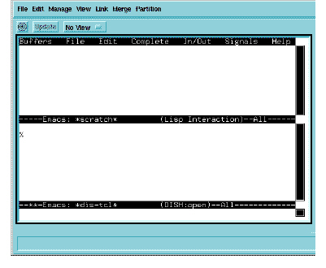

To start Access
In the Browser, select Access > Open Dish.
The Viewer appears with an Emacs session. Emacs splits into two buffers. One Emacs buffer’s status line now shows (DISH:open).

At this point, you can enter Access commands and send them to the interpreter.
Alternatively, you can open Dish using the Viewer menu.
1 In the Browser, select Viewer > New Viewer.
The Viewer appears with an Emacs session.
2 Type:
Esc-x dish
Note: If you already have a Viewer session open, you can execute step 3 at any time.
3 Press ENTER.
The Viewer appears with the Emacs session.